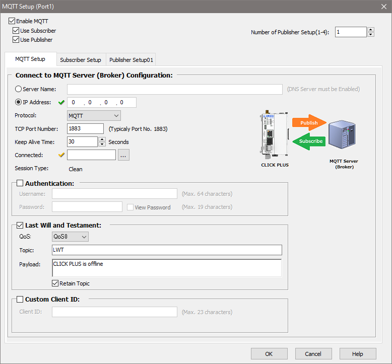
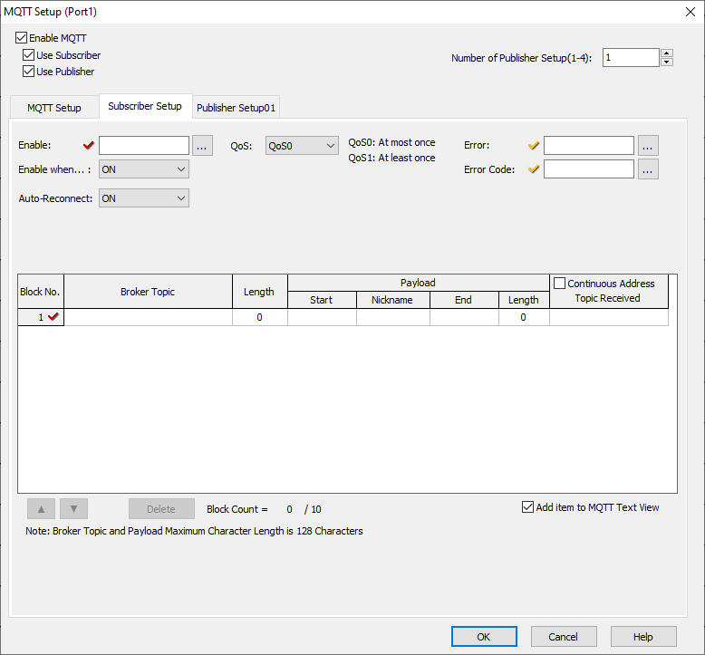
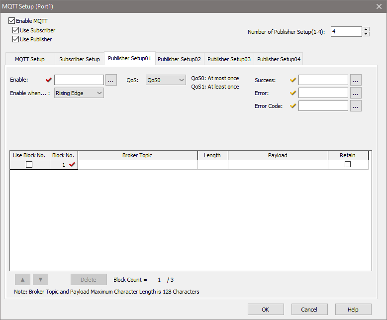

Topic: CL269

| MQTT Setup |
Topic: CL269
|
The MQTT Client Setup dialog displays current MQTT Client settings. The PLC can connect to one MQTT Broker over each available Ethernet port (Port 1 or WLAN port).
Once connected, the PLC can publish Topics to the Brokers and subscribe to Topics from the Brokers.

Enable MQTT: Check the box to enable the MQTT Client on this port and to make configuration settings available.
Use Subscriber: After enabling MQTT, check the box to enable the MQTT Subscriber to make configuration settings available.
Use Publisher: After enabling MQTT, check the box to enable the MQTT Publisher to make configuration settings available.
Number of Publisher Setup (1-4): Select the number of MQTT Publishers to configure. The CLICK Plus supports connections with up to four Publishers.
Server Name/IP Address: If a DNS Server is configured, the Server Name or URL can be entered. If not, enter the IP address of the MQTT Broker.
Protocol: Only unencrypted (MQTT) Brokers are supported.
TCP Port Number: Enter the TCP Port Number used by the MQTT Broker. The standard unencrypted port number is 1883.
Keep Alive Time: Session Keep Alive Time assures that the connection is still open and both Broker and client are connected to one another. The Keep Alive Time interval is the longest possible period of time that Broker and client can endure without sending a message. The client specifies a time interval in seconds and communicates it to the Broker when it establishes the connection.
Connected: If an address (C bit) is entered here, the selected address will contain the connection status for the Broker.
Session Type: Clean is the only Session Type available. .
Authentication: Used if the MQTT Broker requires authentication before it will accept messages. If needed, enter the Username and Password to connect to the MQTT Broker.
MQTT is often used on unreliable networks. The Last Will and Testament (LWT) feature is used in MQTT to notify other clients about an ungracefully disconnected client. Each client can specify its Last Will message (a normal MQTT message with Topic, Payload, and Retain flag) when connecting to a Broker. The Broker will store the message until it detects that the client has disconnected ungracefully. If the client disconnect abruptly, the Broker sends the message to all clients that are subscribed to the Topic which was specified in the Last Will message. The stored Last Will message will be discarded if a client disconnects gracefully.
According to the MQTT 3.1.1 specification the Broker will distribute the LWT of a client in the following cases:
Last Will and Testament: Check the box to enable a Last Will and Testament.
QoS: Quality of Service is an agreement between sender and receiver of a message regarding the guarantee of delivering a message. CLICK CPUs support 2 levels of QoS:
Topic: The Topic name for the Last Will and Testament. A Topic in general is a simple string of 1 to 128 characters. It can consist of multiple levels, separated by a forward slash. A Topic is case-sensitive, and can contain spaces. A leading forward slash is not recommended. Published Topics cannot start with $. Wildcards (+ or #) are not supported.
Payload: The Payload : It’s completely up to the client if it wants to send binary data or textual data. The only requirement is that the data be stored in a String element.
Retain Topic: The Retain flag determines if the message will be saved by the Broker even after sending it to all current subscribers. This effectively makes the message for the Topic a "last known good value". Normally if a publisher publishes a message to a Topic, and no one is currently subscribed to that Topic, the message is simply discarded by the Broker. However, the publisher can tell the Broker to keep the last message for that Topic by setting the Retain flag. New clients that subscribe to a Topic that is Retained will receive the "last known good value" for that Topic as soon as they subscribe. Without retained messages, any new subscribers would have to wait for the status to change before it received a message. Only one message is Retained per Topic. The next message published on that Topic replaces the last Retained message for that Topic.
To Delete a retained message send another Retained message with an empty Payload (a zero-byte String, for example "") to the same Topic where the previous Retained message is stored. The Broker deletes the Retained message meaning new subscribers will no longer get a "last known good value" message for that Topic.
Custom Client ID: Each MQTT Client must have a unique Client ID. By default, a Client ID is generated for the CLICK CPU using its Part Number and MAC Address. This ensures that each device will have a unique Client ID. To use a custom Client ID instead, enable this checkbox and enter the value in the Client ID field.
Client ID: If the Custom Client ID checkbox is enabled, a value for the Client ID must be entered. The Client ID can be up to 64 characters long, and must contain only characters a-z, 0-9, and A-Z . The Client ID must be unique among all clients connecting to the MQTT broker.
The MQTT Subscriber Setup dialog is used to subscribe to Topics in an MQTT Broker. Each MQTT Client (1 per port) can subscribe to up to 10 MQTT Broker Topics. After a client successfully subscribes to one or more Topics, as long as it remains enabled, it will receive every published message matching the Topic of the subscription. The MQTT Client must subscribe to at least one Topic if the Subscriber is enabled.

Enable: Enter an address to be used to enable/disable the MQTT Subscriber.
Enable when: Select whether the Enable address should be ON or OFF to enable the MQTT Subscriber. When enabled, the Payload will be updated every time the Broker topic is updated.
Auto-Reconnect: When Auto-Reconnect is OFF, the Subscriber connection will remain disconnected after each Error event; the Enable Bit must be retriggered to reconnect to the MQTT Broker. When Auto-Reconnect is ON, the Subscriber will briefly provide Error information before attempting to reconnect automatically to the MQTT Broker.
QoS: Select the Quality of Service level of the subscribed Topics. Available levels are QoS0 (delivered at most once) or QoS1 (delivered at least once), as described above.
Error: Enter a Bit address to store the error status of the Subscriber, if desired.
Error Code: Enter an Integer address to store the Subscriber's Error Code, if desired.
Block No.: Up to 10 Blocks, each comprising a Topic and Payload, can be subscribed. At least one Block must be subscribed if the Subscriber is enabled.
Broker Topic: Select a previously defined Topic from the dropdown list, or click the 'More Options' ellipsis to open the Broker Topic Picker to select or edit the list of available Topics. A list of up to 50 Topic names can be defined. These are shared between the Subscriber and Publishers.
Length: The character length of the selected Topic name is displayed. A maximum of 128 characters is allowed in a Topic name.
Start: Select a starting Text address to hold the received Payload.
Nickname: If the selected starting address has a nickname, it will be displayed here.
End: Select the ending Text address for the received Payload. The Length is calculated based on the ending Text address. If the Length is entered, the Ending Text Address is automatically entered.
Length: Enter the length of the text string to be reserved to hold the received Payload. The resulting ending address is shown in the End field.
Continuous Address: Check this box to have consecutive addresses assigned automatically to the Topic Received bit after the first address is assigned.
Topic Received: Enter a Bit address to contain a Messaged Received flag for this Topic.
Add Item to MQTT Text View: Check this box to add the subscribed Topics to the MQTT Text View monitor.
The MQTT Publisher Setup dialog is used to publish messages from a CLICK PLC to a MQTT Broker. Each published message must contain a Topic, which will be used by the Broker to forward the message to interested clients, and a Payload which contains the actual data to transmit. When a client publishes a message to a MQTT Broker, the Broker will determine which other clients have subscribed to that Topic and then send the appropriate message to those clients. The client who publishes the message is only concerned about delivering the message to the Broker. From there on it is the responsibility of the Broker to deliver the message to all subscribers. The publishing client doesn’t get any feedback that says subscribers have received the message. The MQTT Client must publish to at least one Topic if the Publisher is enabled.
Up to 4 Publishers can be set up, and each can contain up to 3 Topic/Payload Blocks to be published on a single trigger event. Each Publisher Setup must have an Enable address configured, and must use at least one Topic/Payload Block.

Enable: Enter an address to be used to trigger the MQTT Publisher.
Enable when: Select whether the Publish event is triggered on the Rising Edge or Falling Edge of the Enable address. The Payload will be sent everytime the Publisher is enabled (triggered).
QoS: Select the Quality of Service level of the published Topics. Available levels are QoS0 (delivered at most once) or QoS1 (delivered at least once), as described above.
Success: Enter a Bit address to store the Success flag, set when the Topic is successfully published to the Broker, if desired.
Error: Enter a Bit address to store the error status of the Publisher, if desired.
Error Code: Enter an Integer address to store the Publisher's Error Code, if desired.
Use Block No.: Up to 3 Blocks, each comprising a Topic and Payload, can be published. At least one Block must be set to publish, by checking this box.
Broker Topic: Select a previously defined Topic from the dropdown list, or click the 'More Options' ellipsis to open the Broker Topic Picker to select or edit the list of available Topics. A list of up to 50 Topic names can be defined, shared between the Subscriber and Publishers.
Length: The character length of the selected Topic name is displayed. A maximum of 128 characters is allowed in a Topic name.
Payload: Configure the Payload to be sent with each Topic using the MQTT Payload Builder.
Retain: The Retain flag determines if the message will be saved by the Broker even after sending it to all current subscribers. This effectively makes the message for the Topic a "last known good value". Normally if a publisher publishes a message to a Topic, and no one is currently subscribed to that Topic, the message is simply discarded by the Broker. However, the publisher can tell the Broker to keep the last message for that Topic by setting the Retain flag. New clients that subscribe to a Topic that is Retained will receive the "last known good value" for that Topic as soon as they subscribe. Without retained messages, any new subscribers would have to wait for the status to change before it received a message. Only one message is Retained per Topic. The next message published on that Topic replaces the last Retained message for that Topic.
To Delete a retained message send another Retained message with an empty Payload (a zero-byte String, for example "") to the same Topic where the previous Retained message is stored. The Broker deletes the Retained message meaning new subscribers will no longer get a "last known good value" message for that Topic.
Rearrange/Delete Blocks: Once more than one Block is defined, the controls at the bottom of the dialog will let you rearrange the order of the Blocks, or delete the currently highlighted Block.